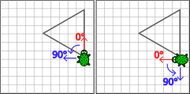

Die Schildkröte soll das Sechseck nachzeichnen.
Hinweis: Alle Seiten sind sind 8 Schritte lang.
Der Drehwinkel lässt sich aus 360° und der Anzahl der Ecken berechnen.
Die Schildkröte soll die Sechsecke nachzeichnen.
Hinweis: Die Seiten der Sechsecke sind 11, 9, 5 und 2 Schritte lang.
Der Drehwinkel lässt sich aus 360° und der Anzahl der Ecken berechnen.
Um mit
der vorgegebenen Anzahl an Bausteinen auszukommen, musst du Funktionen mit Parametern verwenden.
Die Schildkröte soll die Polygone nachzeichnen. Es handelt sich um
- ein Zehneck mit 8 Schritten Seitenlänge,
- ein Sechseck mit 6 Schritten Seitenlänge,
- ein Viereck mit 5 Schritten Seitenlänge und
- ein Dreieck mit 5 Schritten Seitenlänge,
Hinweis: Die Drehwinkel lassen sich aus 360° und der Anzahl der Ecken berechnen. Um mit
der vorgegebenen Anzahl an Bausteinen auszukommen, musst du Funktionen mit Parametern verwenden.
Weitere Hinweise:

Wenn du die Funktion verwendest, musst du einen Wert für den Parameter angeben:


Wenn du die Funktion verwendest, musst du einen Wert für den Parameter angeben:

Der Drehwinkel ist immer relativ zu der Ausrichtung der Schildkröte:
